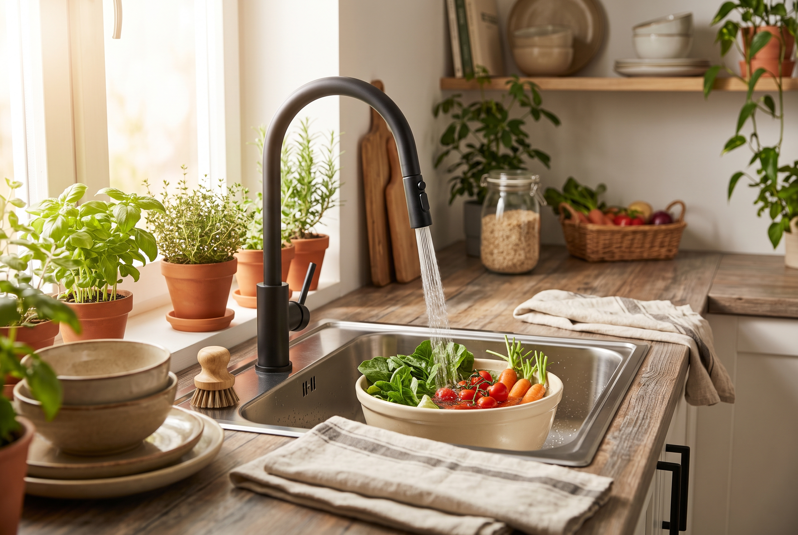
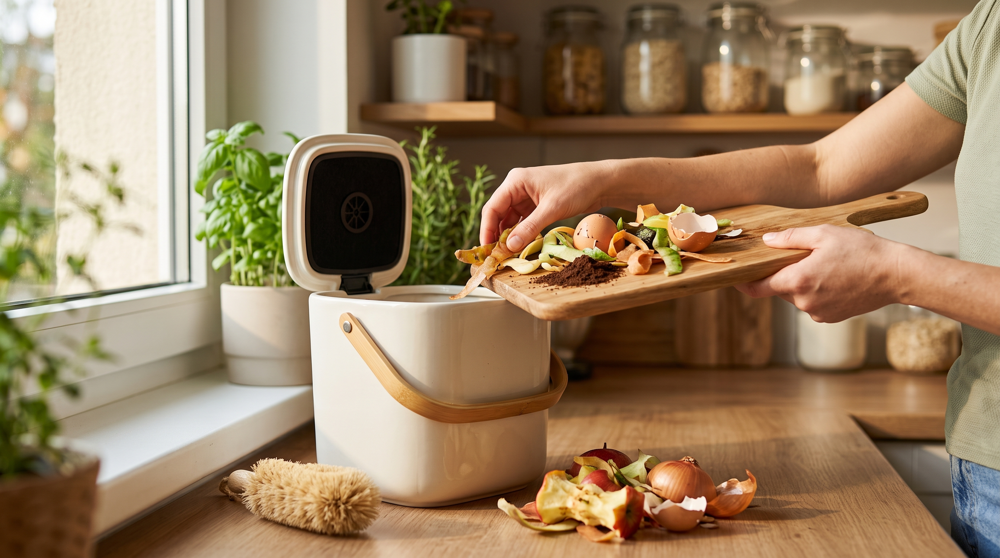

Kategoria: Gospodarka wodna | 12.02.2026Jak oszczędzać wodę w kuchni?
Oto proste, codzienne nawyki, które pomogą Ci realnie obniżyć rachunki za wodę i chronić środowisko naturalne...
Czytaj dalej →Znajdź rzetelne artykuły, poradniki i przewodniki o ekologii w domu.

Kategoria: Gospodarka wodna | 12.02.2026Oto proste, codzienne nawyki, które pomogą Ci realnie obniżyć rachunki za wodę i chronić środowisko naturalne...
Czytaj dalej →
Kategoria: Zero Waste | 05.02.2026Nawet mieszkając w bloku możesz przetwarzać bioodpady. Dowiedz się, jaki kompostownik wybrać i jak o niego dbać...
Czytaj dalej → Kategoria: Oszczędzanie energii | 28.01.2026
Kategoria: Oszczędzanie energii | 28.01.2026
Urządzenia w trybie stand-by, stare AGD... Sprawdź, co po cichu pobiera najwięcej energii elektrycznej w Twoim gospodarstwie...
Czytaj dalej →